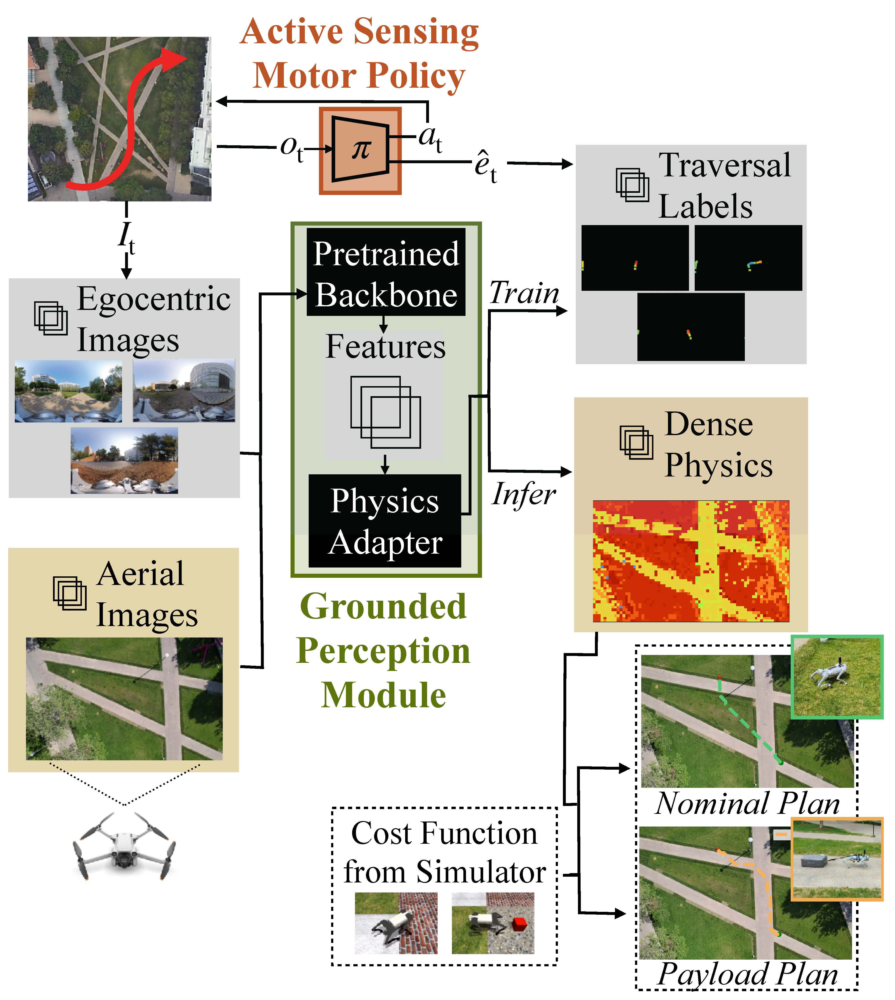

Knowledge of terrain's physical properties inferred from color images can aid in making efficient robotic locomotion plans. However, unlike image classification, it is unintuitive for humans to label image patches with physical properties. Without labeled data, building a vision system that takes as input the observed terrain and predicts physical properties remains challenging. We present a method that overcomes this challenge by self-supervised labeling of images captured by robots during real-world traversal with physical property estimators trained in simulation. To ensure accurate labeling, we introduce Active Sensing Motor Policies (ASMP), which are trained to explore locomotion behaviors that increase the accuracy of estimating physical parameters. For instance, the quadruped robot learns to swipe its foot against the ground to estimate the friction coefficient accurately. We show that the visual system trained with a small amount of real-world traversal data accurately predicts physical parameters. The trained system is robust and works even with overhead images captured by a drone despite being trained on data collected by cameras attached to a quadruped robot walking on the ground.
@article{margolis2023active,
title={Learning to See Physical Properties with Active Sensing Motor Policies},
author={Margolis, Gabriel B and Fu, Xiang and Ji, Yandong and Agrawal, Pulkit},
journal={Conference on Robot Learning},
year={2023}
}
Overview
We train a vision module to perceive terrain properties like friction coefficient and roughness parameter.
The key is to optimize the robot's gait to accurately sense the terrain, resulting in emergent behavior like rubbing the foot to sense friction.
Emergent foot swiping
Emergent foot rubbing
This informative proprioceptive data from real-world traversals provides training data for a vision module.

The resulting vision module can be evaluated on drone images to predict a map of the terrain properties.
This defines a digital twin of the terrain to inform locomotion in unseen modes like payload dragging without collecting additional real-world data.